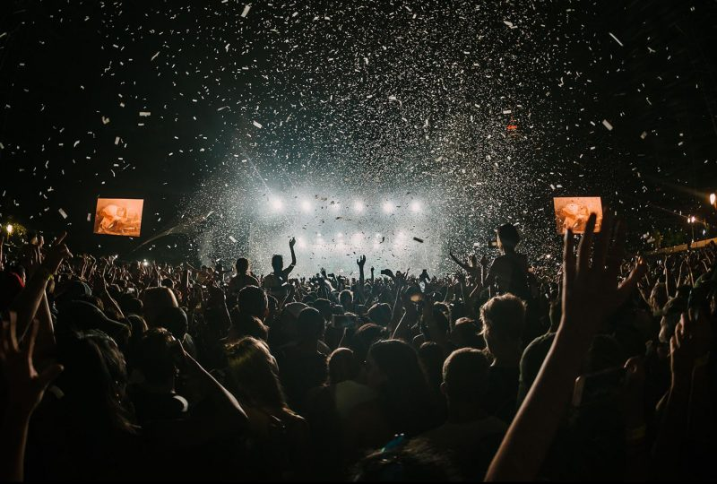

ALMA Festival Barcelona 2024
El festival nos traerá a uno de los iconos del pop rock anglosajón como es el trío irlandés Two Door Cinema Club, así como talentos al alza de nuestra escena tales como Judeline, Morreo, La Paloma, Karavana, y pilares indispensables de la misma como Amaral, La Oreja de Van Gogh, Arde Bogotá, Vetusta Morla, Iván Ferreiro, Despistaos, Viva Suecia, Fuel Fandango, Depedro o La Casa Azul. Ya se ha confirmado que los primeros artistas invitados son Mikel Izal, Ginebras, Shinova, Hidrogenesse, Repion, Shego, Sienna y Vatacholo. Amantes de la música, tenéis una cita en el Low del viernes 26 al domingo 28 de julio del 2024. ALMA Festival Barcelona, anteriormente conocido como Festival Jardins Pedralbes, tendrá lugar en el Poble Espanyol de Barcelona en varias fechas distribuidas a lo largo del mes de junio y julio de 2024. Sus primeras confirmaciones están protagonizadas por bandas internacionales como James Blunt o Take That, además de artistas españoles como Valeria Castro o Vetusta Morla.